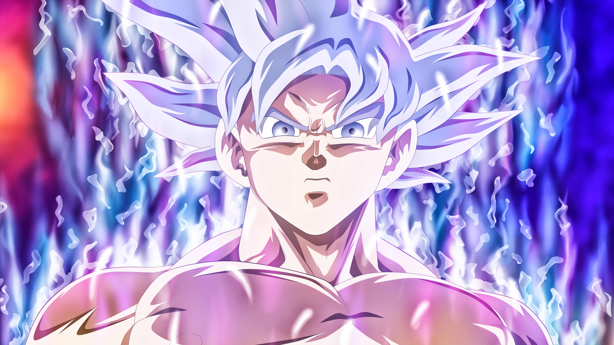

Goku
el primer personaje que me marco la vida.
Ajedrez
El juego que me cambio la vida.

Twenty one Pilots
La mejor banda que entro a mi vida.
tiempo en la pagina
el primer personaje que me marco la vida.
El juego que me cambio la vida.
La mejor banda que entro a mi vida.